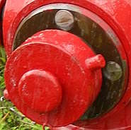
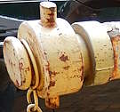
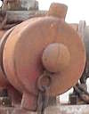
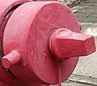
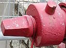
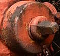
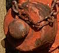

Fire Hydrant cap types in Hong Kong
[Sources for this page]Sources for this page
- brykle, uploaded on Y2007-M07-D28 (photo taken on Y2007-M07-D23) | Flickr | https://www.flickr.com/photos/brykle/931510311/
- brykle, uploaded on Y2007-M07-D28 (photo taken on Y2007-M07-D23) | Flickr | https://www.flickr.com/photos/brykle/932726520/
- Google | Google Maps (Street View) | https://www.google.com/maps/
- halosdown, uploaded on Y2006-M01-D22 (photo taken on Y2006-M01-D21) | IMG_1839 | Flickr | https://www.flickr.com/photos/halosdown/89611989/
- Water Supplies Department (HKSAR Government), originally on Y1995-M11-D20, revised on Y2003-M09-D05 | Water Supplies Department Standard Drawings 1.34B: Painting on Fire Hydrant | https://www.wsd.gov.hk/filemanager/en/content_1599/WSD0134-B.pdf
- Water Supplies Department (HKSAR Government), on Y2015-M05-D22 | Water Supplies Department Standard Drawings 1.54 - Details of Cast Iron Round Head Fire Hydrant | https://www.wsd.gov.hk/filemanager/en/content_1599/WSD0154.pdf
- Water Supplies Department (HKSAR Government), originally on Y2015-M05-D22, revised on Y2021-M02-D03 | Water Supplies Department Standard Drawings 1.55A: Swan Neck Fire Hydrant and Cap (Type II) | https://www.wsd.gov.hk/filemanager/en/content_1599/WSD0155-A.pdf
Standard Type I and Type II caps
I believe Type I and II refers to the threading, not just the caps - there are also Type I and II connector pieces. The diameter of the Type I cap is 150mm (not including handles), while diameter of Type II cap is 110mm (not including handles). Type I cap was also referred to as the 100mm cap due to the front nozzle's inner diameter being 100mm.
Most hydrants in Hong Kong have one front outlet nozzle and two side outlet nozzles, with the front nozzle's cap being Type I and side nozzle's caps being Type II. Swan Neck hydrants only have one nozzle, with Type II connector piece and cap. Heavy Draw-off hydrants have twelve nozzles (three on all four sides), with the top row of four nozzles being Type II and the remaining eight being Type I.
 |
| Type I cap (front cap) on an unpainted connector piece of red Round Head FH16 |
| opposite of 852 Convenience Store in Art Park |
| Photo taken in Y2026-M08 |
 |
| Type II cap on a painted connector piece of an unnumbered yellow Swan Neck |
| Chai Wan Road outside Heung Yuen Gardens |
| Photo taken in Y2026-M08 |
Caps of "viaduct hydrants"
There is a unique type of hydrant cap that have only been seen on "viaduct hydrants", the diameter of which is even smaller than a Type II cap. However, some "viaduct hydrants" do accept Type II caps. There is also a variant of the "viaduct hydrant" cap with four handles instead of two. More details on "viaduct hydrants" in this page.
 |
| "viaduct hydrant" cap of an unnumbered red "two nozzles V-shaped variant viaduct hydrant" |
| Tsing Tsuen Road bridge |
| Photo taken in Y2026-M06 |
| blurry photo of a "viaduct hydrant" cap with four handles of an unnumbered red "two nozzles on opposite sides variant viaduct hydrant" |
| East Kowloon Corridor viaduct |
| Photo taken in Y2026-M06 |
Handles or nut
Once upon a time, Hong Kong used to have caps that are nut operated, but I believe these were phased out at some point during the early 2010s (from the few Google Map street view I have seen so far). If you want to get up close to a hydrant with nut-operated caps, they are still widespread in Macao. Now, all you will see in Hong Kong are caps with handles...well, except two hydrants.
The front and side caps of the AVK Model 2700 outside Cheung Ching Tunnel East Substation have both handles and nuts. From what I know, that hydrant is the only one in Hong Kong to have this kind of caps. However, caps with both handles and nuts are also commonly seen on Macao hydrants.
The O'Brien hydrant outside Tai Tam Tuk Raw Water Pumping Station has a nut-operated front cap but its side nozzles only have handles. I don't know if the nozzles of the O'Brien use Type I or II threadings. And also, the O'Brien is behind a fence so you can't get up close to it.
 |
| front cap of an unnumbered red AVK Model 2700 |
| Tsing Yi Heung Sze Wui Rd @ Cheung Ching Tunnel East Substation |
| Photo taken in Y2026-M06 |
 |
| side cap of an unnumbered red AVK Model 2700 |
| Tsing Yi Heung Sze Wui Rd @ Cheung Ching Tunnel East Substation |
| Photo taken in Y2026-M06 |
 |
| front cap of the A. P. Smith O'Brien (one-piece model) at Tai Tam Tuk Raw Water Pumping Station, with nut |
| Tai Tam Tuk Raw Water Pumping Station |
| Photo taken in Y2026-M08 |
 |
| side cap of the A. P. Smith O'Brien (one-piece model) at Tai Tam Tuk Raw Water Pumping Station, with handles (but one handle is missing) |
| Tai Tam Tuk Raw Water Pumping Station |
| Photo taken in Y2026-M03 |